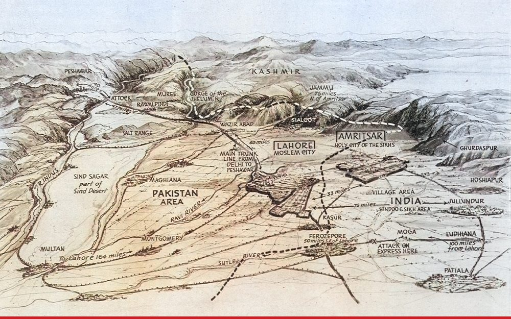

The object
A panoramic view drawn by the artist Percy Home and published in The Sphere in London on 13 September 1947, barely a month after partition and independence. It formed the cartographic element of an illustrated feature, “The Two-Way Exodus in the Punjab.” The photographs and captions surrounding the panorama on the original page are not reproduced here.
A map in dramatic perspective
Rather than a plan, Home adopts a low, tilted viewpoint looking north-east across the Punjab plains toward Kashmir, so the land recedes in theatrical depth. Rivers, trunk road and railway become the arteries of flight. The broken boundary separates “Pakistan Area” from “India (Hindoo & Sikh Area),” while Lahore and Amritsar are labelled through communal identity and notes of violence are fixed to particular routes.
The gaze
Home’s viewpoint is one no refugee had. The tilted prospect lets a reader in London take in Lahore, Amritsar and the roads between them in a single look, with the violence reduced to captions pinned to points along the route, while the people on those roads could see only the next mile. A British magazine thus made the catastrophe of a partition its own government had rushed through into an absorbing illustration. Set beside the 1946 staff map the contrast is exact: there the line was a planning variable; here its consequences are the scenery.
Epilogue
The formal collection ends in 1946. This image follows as an epilogue because it shows what the imperial archive generally withholds: the metropolitan act of looking at the upheaval after the line had entered lived space. The collection begins with India imagined from the deck of a ship and ends with Punjab viewed from an impossible aerial distance.
Source
Percy Home, panorama for “The Two-Way Exodus in the Punjab,” The Sphere, London, 13 September 1947, p. 330. A scan of the full page is held on Wikimedia Commons.